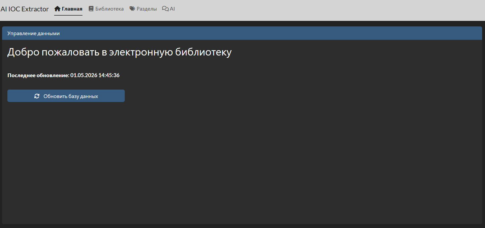
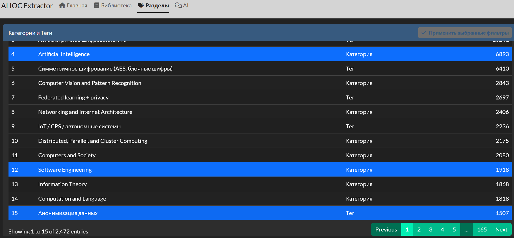
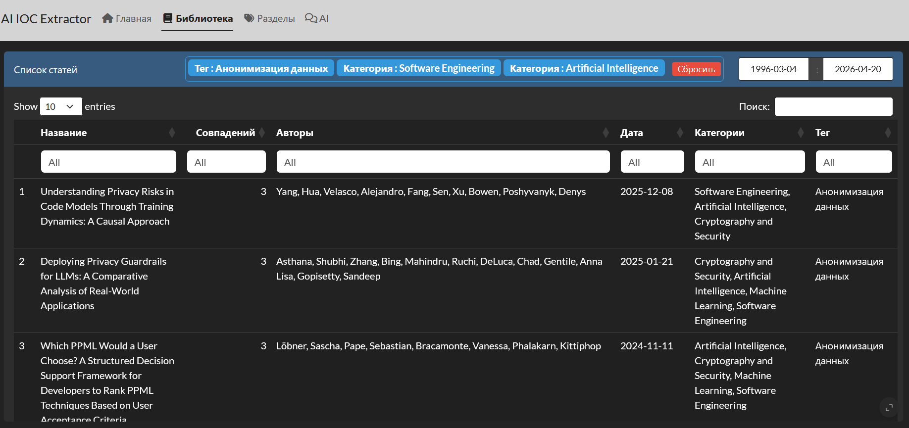
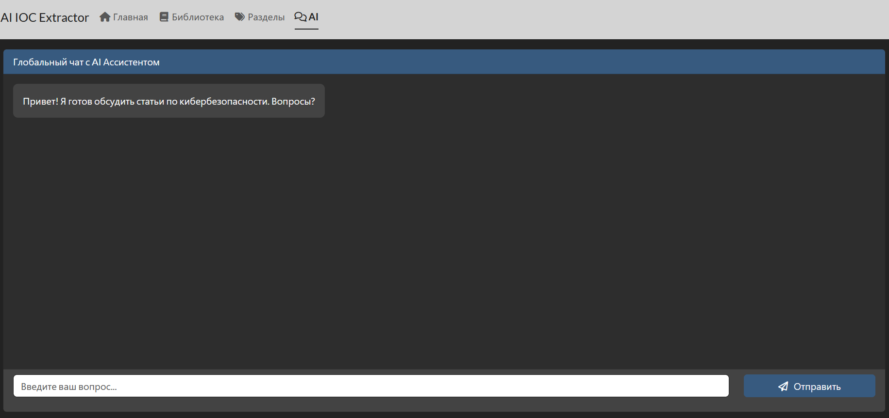
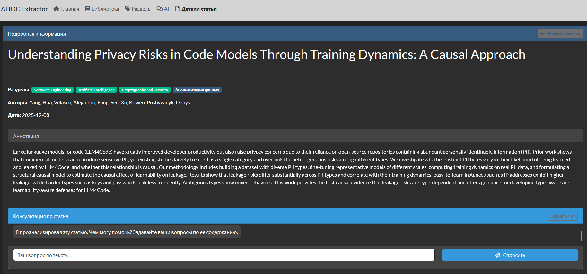

Пререлиз-чекап
2026-05-02
Автоматическая разметка датасета через эмбеддинги
Задача — взять 1000 PDF статей по кибербезопасности и автоматически присвоить
каждой теги, не используя LLM и не размечая вручную. Это решение первой и
самой трудоёмкой проблемы: откуда взять обучающие данные.
Подход основан на семантическом сходстве. Текст статьи и названия
тегов переводятся в векторное пространство с помощью модели
all-MiniLM-L6-v2, после чего измеряется косинусное расстояние
между вектором статьи и векторами каждого тега. Три ближайших
тега по смыслу и становятся метками.
Технические решения:
PyMuPDF (fitz) — извлечение текста из PDF
sentence-transformers/all-MiniLM-L6-v2 —
лёгкая быстрая модель для эмбеддингов
cosine_similarity — метрика близости векторов
Формат JSONL — стандарт для файнтюнинга
model = SentenceTransformer("sentence-transformers/"
"all-MiniLM-L6-v2")
tag_emb = model.encode(TAGS, normalize_embeddings=True)
def extract_text(path):
try:
doc = fitz.open(path)
text = ""
for page in doc:
text += page.get_text()
text = re.sub(r"\s+", " ", text).strip()
if len(text) < MIN_CHARS:
return None
return text[:MAX_CHARS]
except Exception:
return None
def get_tags(text):
emb = model.encode([text], normalize_embeddings=True)
sims = cosine_similarity(emb, tag_emb)[0]
idx = sims.argsort()[-TOP_K:][::-1]
return [TAGS[i] for i in idx]Результат — файл qwen_dataset.jsonl,
где каждая запись - это готовый диалог
в формате system/user/assistant,
пригодный для файнтюнинга.
pdf_files = [
f for f in os.listdir(PDF_FOLDER)
if f.endswith(".pdf")
]
print("PDF FOUND:", len(pdf_files))
written = 0
skipped = 0
with open(OUTPUT_JSONL, "w", encoding="utf-8") as f:
for file in tqdm(pdf_files):
path = os.path.join(PDF_FOLDER, file)
text = extract_text(path)
if text is None:
skipped += 1
continue
tags = get_tags(text)
sample = {
"messages": [
{
"role": "system",
"content": SYSTEM_PROMPT
},
{
"role": "user",
"content": text
},
{
"role": "assistant",
"content": "|".join(tags)
}
]
}
f.write(json.dumps(sample, ensure_ascii=False) + "\n")
written += 1Файнтюнинг Qwen3-8B через Unsloth + LoRA
На этом этапе берётся предобученная модель Qwen3-8B и дообучается на
размеченном датасете из 1000 статей. Цель — научить модель определять
теги по тексту статьи в рамках строго заданного словаря из 29 категорий.
Для обучения используется LoRA (Low-Rank Adaptation) — метод который
не меняет все веса модели, а добавляет небольшие адаптерные матрицы
к ключевым слоям. Это позволяет обучать 8-миллиардную модель на
обычном потребительском GPU вместо кластера.
Фреймворк Unsloth оптимизирует обучение под конкретное железо —
ускоряет forward/backward pass и снижает потребление VRAM примерно
в 2 раза по сравнению с обычным HuggingFace.
Ключевые параметры обучения:
нужно много проходов
снижение LR к концу обучения
tokenizer = get_chat_template(tokenizer,
chat_template="qwen-2.5")
dataset = load_dataset("json", data_files=DATASET_PATH,
split="train")
dataset = standardize_sharegpt(dataset)
def formatting_func(examples):
texts = [
tokenizer.apply_chat_template(
convo,
tokenize = False,
add_generation_prompt = False
)
for convo in examples["messages"]
]
return {"text": texts}
dataset = dataset.map(formatting_func, batched=True)
trainer = SFTTrainer(...)
trainer.train()Параллельная разметка 47 000 статей: теги и тип исследования(теги контекста)
Дообученная модель через LM Studio API обрабатывает все 47 390 абстрактов
и присваивает каждой статье два типа меток.
Первый - тематические теги по двухуровневой иерархии из 9 родительских
категорий и 31 подкатегории. Модель выбирает от 1 до 4 тегов, предпочитая
конкретные подкатегории общим. Если подкатегория не подходит - ставится
родительская.
Второй - тип исследования, отвечающий на вопрос что именно делает статья:
предлагает атаку, защиту, формальную модель, обзор литературы или что-то иное.
Это второе измерение классификации позволяет фильтровать базу не только
по теме, но и по характеру вклада.
Технические решения:
для одновременных HTTP запросов
модель видит структуру и выбирает осознанно
/no_think - отключение reasoning mode Qwen3
Checkpoint система - load_existing при старте
подхватывает уже готовые результаты
затем мягкое через grepl
lm_request <- function(prompt, max_tokens = 80,
url = "http://localhost:1234/v1/chat/"
"completions",
model = "tokenizer_qwen3-8b.Q6_K",
max_retries = 3) {
payload <- list(
model = model,
messages = list(list(role = "user", content = prompt)),
temperature = 0.0,
max_tokens = max_tokens
)
for (attempt in seq_len(max_retries)) {
result <- tryCatch({
resp <- httr::POST(
url,
body = jsonlite::toJSON(payload, auto_unbox = TRUE),
encode = "raw",
httr::add_headers("Content-Type" = "application/json"),
httr::timeout(60)
)
trimws(httr::content(resp, "parsed")$choices[[1]]
$message$content)
}, error = function(e) {
Sys.sleep(2)
NA
})
if (!identical(result, NA)) return(result)
}
return("")
}Для ускорения обработки используется
параллельное выполнение через future + furrr -
8 воркеров отправляют запросы
одновременно, соответствуя числу
параллельных слотов LM Studio.
process_article <- function(article, lm_url, model_name,
max_retries, tag_tree, all_tags, allowed_context) {
article_id <- as.character(article$id)
abstract <- trimws(if (!is.null(article$abstract))
article$abstract else "")
if (nchar(abstract) == 0) {
return(list(id = article_id, skipped = TRUE))
}
raw_tags <- lm_request(build_tags_prompt(
abstract, tag_tree),
max_tokens = 80, url = lm_url,
model = model_name, max_retries
= max_retries)
raw_context <- lm_request(build_type_prompt(abstract),
max_tokens = 30, url = lm_url,
model = model_name, max_retries
= max_retries)
tags <- parse_tags(raw_tags, all_tags)
context <- parse_context_tags(raw_context, allowed_context)
list(
id = article_id,
tags = tags,
context_tags = context,
abstract = abstract,
skipped = FALSE
)
}Результат сохраняется в JSON каждые
10 батчей с поддержкой продолжения
с места остановки.
load_existing <- function(path) {
if (!file.exists(path)) return(list())
tryCatch({
txt <- trimws(paste(readLines(path, warn = FALSE),
collapse = "\n"))
if (nchar(txt) == 0) return(list())
data <- jsonlite::fromJSON(path, simplifyVector = FALSE)
setNames(data, sapply(data, function(x) x$id))
}, error = function(e) list())
}
save_results <- function(results, path) {
dir.create(dirname(path), recursive = TRUE,
showWarnings = FALSE)
output <- unname(lapply(results, function(x) {
x$skipped <- NULL
x
}))
write(jsonlite::toJSON(output, auto_unbox = TRUE
, pretty = TRUE), path)
}Интерфейс построен на базе пакета bslib, который заменяет стандартный дизайн Shiny
на современные компоненты Bootstrap 5. Приложение использует многостраничную
навигацию (page_navbar). В отличие от старых подходов Shiny, где страницы
перерисовывались сервером (renderUI), здесь все вкладки загружаются в DOM сразу,
а переключение между ними происходит мгновенно на стороне клиента.

Основные вкладки:
Главная (home): Дашборд для ручного обновления базы данных.
Библиотека (articles): Основная таблица со списком статей.
Разделы (sections): Инструмент для сборки комбинаций тегов и категорий.
AI (chat): Глобальный чат с ИИ-ассистентом.
Детали статьи (article_detail): Скрытая вкладка, которая динамически
активируется при клике на конкретную статью в “Библиотеке”.
Взаимодействие с базой данных вынесено в
изолированную функцию fetch_data(). Для
подключения используется пакет mongolite.
Подключение происходит безопасно:
учетные данные не зашиты в код, а
подтягиваются из переменных окружения.
Функция использует механизм
on.exit(db$disconnect()), что гарантирует
автоматическое закрытие соединения с БД
при любом исходе (даже при ошибках),
предотвращая утечку соединений.
fetch_data <- function() {
db <- mongolite::mongo(
collection = "metadata",
db = "cybersecurity_articles",
url = sprintf(
"mongodb://%s:%s@%s:27017/cybersecurity?
authSource=admin",
Sys.getenv("MONGO_USER"),
Sys.getenv("MONGO_PASS"),
Sys.getenv("MONGO_HOST")
)
)
on.exit(db$disconnect())
data <- db$find("{}")
if (nrow(data) > 0) {
data <- data %>% mutate(date = as.Date(date))
}
return(data)
}Приложение объединяет Категории и Теги
в единый справочник “Разделы”. Поскольку
MongoDB часто отдает списки в смешанном
формате (где-то пустые NULL, где-то строки),
перед фильтрацией применяется функция
sanitize_list_col, приводящая массивы
к единому строковому виду.
Вкладка “Разделы” позволяет выбрать
несколько элементов (логическое ИЛИ).
Реактивный блок filtered_data вычисляет
match_score для каждой статьи:
match_scores <- sapply(1:nrow(data), function(i) {
score <- 0
cat_list <- if ("categories" %in% names(data) &&
!is.null(data$categories[[i]])) unlist(data$
categories[[i]])
else character(0)
tag_list <- if ("tag" %in% names(data)
&& !is.null(data$tag[[i]])) unlist(data$tag[[i]])
else character(0)
for (j in 1:nrow(filts)) {
if (filts$type[j] == "Категория" &&
(filts$value[j] %in% cat_list)) score <- score + 1
if (filts$type[j] == "Тег" &&
(filts$value[j] %in% tag_list)) score <- score + 1
}
score
})
data$match_score <- match_scores
data <- data %>%
filter(match_score > 0) %>%
arrange(desc(match_score), desc(date))Благодаря этому алгоритму в верху списка всегда оказываются статьи,
наиболее полно удовлетворяющие сложному запросу пользователя.


Shiny по умолчанию однопоточен. Если бы мы выполняли HTTP-запросы
к ИИ синхронно, весь интерфейс приложения “зависал” бы для всех
пользователей на время генерации ответа.
Для решения этой проблемы архитектура приложения использует
связку пакетов future и promises (plan(multisession)).
Это позволяет делегировать сетевые запросы к ИИ
в отдельные фоновые процессы.
Глобальный чат использует HTTP клиент httr2.
При отправке сообщения создается фоновая
задача(future), которая “обещает” (promise)
вернуть ответ. Когда ответ приходит,
срабатывает оператор %…>%,
который обновляет UI, не
прерывая работу основного потока R.
future_promise <- future(
{
tryCatch({
resp <- httr2::request(Sys.getenv(
"AI_SERVICE_URL")) %>%
httr2::req_body_json(list(
message = user_text)) %>%
httr2::req_timeout(60) %>%
httr2::req_perform() %>%
httr2::resp_body_json()
resp$choices[[1]]$message$content
},
error = function(e) {
paste("Ошибка при обращении к AI-сервису:",
e$message)
})
},
seed = TRUE
)
future_promise %...>% (function(ai_response) {
global_chat_data$history <- append(
global_chat_data$history,
list(list(role = "ai", text = ai_response)))
global_chat_data$is_loading <- FALSE
}) %...!% (function(error) {
global_chat_data$history <- append(
global_chat_data$history,
list(list(role = "ai", text = "Произошла системная
ошибка при обращении к AI.")))
global_chat_data$is_loading <- FALSE
})UI чата:

В карточке статьи есть возможность начать диалог по конкретному тексту (аннотации).
При инициализации чата (SYSTEM_INIT_ANALYSIS) текст статьи скрыто отправляется в
ИИ-сервис для предварительного анализа. Логика обращения вынесена в функцию-посредник
ask_article_ai. В текущей версии она содержит симуляцию задержки, но готова к интеграции
с реальным локальным портом (через переменную AI_PAPER_ANALYSIS).

Приложение упаковывается в Docker
с установкой необходимых библиотек
(например, zlib1g-dev для mongolite
и libuv1-dev для асинхронности).
На самом приложение скрыто за
Nginx, который выступает в роли
Reverse Proxy, обеспечивая
терминацию SSL (HTTPS) и
проброс WebSockets, необходимых
для непрерывного коннекта между браузером и
Shiny сервером.
version: '3.8'
services:
mongodb:
image: mongo:latest
container_name: mongodb
restart: always
environment:
MONGO_INITDB_ROOT_USERNAME: …
MONGO_INITDB_ROOT_PASSWORD: …
ports:
- "127.0.0.1:27017:27017"
volumes:
- mongo_data:/data/db
mongo-express:
image: mongo-express:latest
container_name: mongo-express
restart: always
ports:
- "127.0.0.1:8081:8081" environment:
ME_CONFIG_BASICAUTH_USERNAME: …
ME_CONFIG_BASICAUTH_PASSWORD: …
ME_CONFIG_MONGODB_ADMINUSERNAME: …
ME_CONFIG_MONGODB_ADMINPASSWORD: …
ME_CONFIG_MONGODB_URL: mongodb://
...:...@mongodb:27017/
depends_on:
- mongodb
shiny-ai-ioc:
container_name: shiny-ai-ioc
restart: unless-stopped
ports:
- 127.0.0.1:3838:3838
environment:
- MONGO_USER=…
- MONGO_PASS=…
- MONGO_HOST=172.19.0.2
- AI_SERVICE_URL=
image: shiny-ai-ioc
volumes:
mongo_data:Таким образом, мы создали прототип нашего приложения.
В дальнейшем нам необходимо совершенствовать наш продукт,
оптимизировав и дополнив его функционал.
GitHub: https://github.com/Llooleg/AI-IOC-Extractor
Telegram: https://t.me/+KLvdo-ZnRCpmNDc6
Готовы ответить на ваши вопросы.